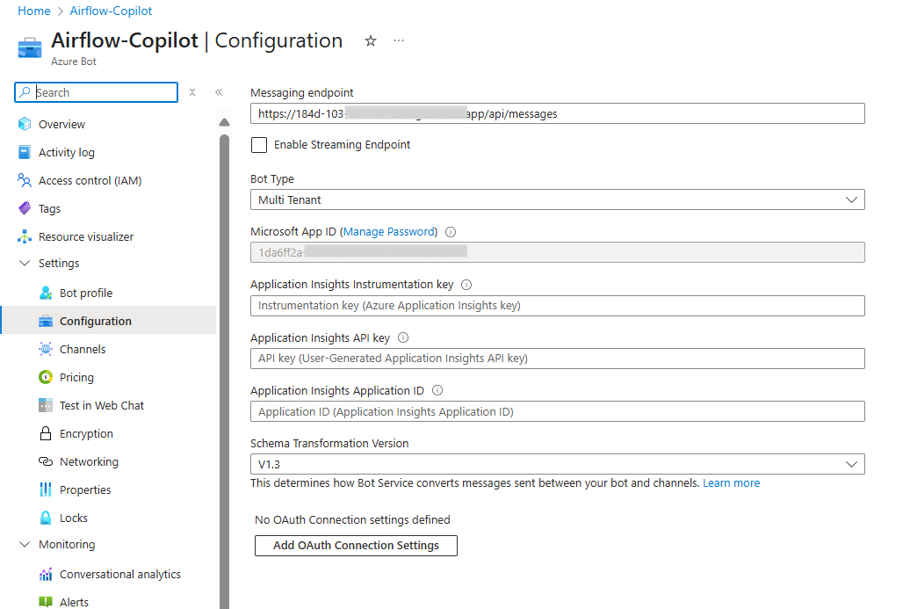

🚀 Getting Started — Airflow Copilot
This guide walks you through launching Airflow Copilot using Docker Compose files.
Note: This Quick Start guide covers local deployment only. For production or cloud-based deployments, refer to the Deployment section.
🧰 Prerequisites
Make sure you have the following ready:
- Docker – Install from Docker Docs
- Apache Airflow – Version >
2.5.0Use the official Docker Compose setup - PostgreSQL – Shared between Airflow and Copilot
- Ngrok Authtoken – For public URL tunneling (local bot testing)
- Azure Bot Credentials – follow Create an Azure Bot to obtain
- Microsoft App ID & Password
- Azure Service Principal (Client ID & Secret) - Usually same as above.
- Azure Resource Group
- Azure Tenant ID
- Azure Bot Name
- Fernet Key (32‑byte secret): create using below script (if not)
python -c "from cryptography.fernet import Fernet; print(Fernet.generate_key().decode())"
- LLM Provider & API Keys
Supported:OpenAI,Google_GenAI,Anthropic,Groq
To get started free go with Google Gemini, create a free API key and use the
gemini-2.5-flashmodel.
🧪 Design(conceptual)
Below design reflect the local deployment of the Airflow Copilot.

🛠 Step 1 — Launch Apache Airflow
If Airflow isn’t running:
- Follow the guide: Run Airflow via Docker Compose
- Ensure Airflow and PostgreSQL are up.
➡️ Airflow UI → http://localhost:8080
🔐 Login → admin / admin
🤖 Step 2 — Deploy Airflow Copilot
-
Create a
.envfile using the template below and update all the necessary environment variables required for deployment.For detailed descriptions of each variable, refer to the Environment Variables section.
.env# ───────── LLM (pick ONE provider) ───────── LLM_MODEL_PROVIDER_NAME=OpenAI LLM_MODEL_NAME=gpt-4o OPENAI_API_KEY=your-openai-api-key # Google example: # LLM_MODEL_PROVIDER_NAME=Google_Genai # LLM_MODEL_NAME=gemini-2.5-flash # GOOGLE_GENAI_API_KEY=ai-... # Anthropic example # LLM_MODEL_PROVIDER_NAME=Anthropic # LLM_MODEL_NAME=claude-3-5-sonnet-20240620 # ANTHROPIC_API_KEY=ai-... # Groq example # LLM_MODEL_PROVIDER_NAME=Groq # LLM_MODEL_NAME=groq-1 # GROQ_API_KEY=ai-... # ───────── Azure Bot / Service Principal ───────── MICROSOFT_APP_ID=your-bot-id MICROSOFT_APP_PASSWORD=bot-secret AZURE_CLIENT_ID=your-client-id AZURE_BOT_NAME=your-bot-name # e.g., Airflow-Copilot AZURE_CLIENT_SECRET=your-spn-secret AZURE_TENANT_ID=your-tenant-id RESOURCE_GROUP=your-resource-group # ───────── Airflow REST API ───────── AIRFLOW_BASE_URL=your-airflow-url # e.g., http://localhost:8080/ AIRFLOW_AUTH_STRATEGY=per_user # default is 'per_user', can also be 'centralized' # ───────── Postgres connection ───────── # Pass Airflow Postgres connection string here if you are using same postgres for Airflow and Copilot # If you are using a different Postgres instance, update the connection string accordingly. # Example: # DB_USER=airflow # DB_PASSWORD=airflow # DB_HOST=host.docker.internal # DB_PORT=5432 DB_URI=postgresql://<your-db-user>:<your-db-password>@<your-db-host>:<your-db-port>/<your-db-name> # ───────── Misc ───────── FERNET_SECRET_KEY=your-fernet-secret-key # Generate using: python -c "from cryptography.fernet import Fernet; print(Fernet.generate_key().decode())" MIN_MSG_TO_RETAIN=10 #default is 10 # Minimum number of messages to retain in the conversation history before summarization MIN_MSG_TO_SUMMARIZE=10 #default is 10 # ───────── Summarization LLM ───────── SUMMARIZATION_LLM_MODEL_PROVIDER_NAME=OpenAI # or OpenAI, Anthropic, Google_Genai SUMMARIZATION_LLM_MODEL_NAME=gpt-4o # or gpt-4o, claude-3-5-sonnet # ───────── Optional ───────── # If you want to use ngrok for local development, set your ngrok authtoken NGROK_AUTHTOKEN=your-ngrok-authtoken # Optional, if you want to use ngrok for local development -
Create
docker-compose.local.ymlin same.envfolder.docker-compose.local.ymldocker-compose.local.ymlversion: "3.9" # ──────────────── Common env-file anchor ──────────────── x-env: &envfile env_file: .env # Populate from .env or .env.local networks: airflow: driver: bridge services: ########################################################################### # 1) Copilot – FastAPI + LangGraph agent ########################################################################### copilot: image: thedatacarpenter/airflow-copilot:latest container_name: copilot restart: unless-stopped ports: - "3978:3978" healthcheck: test: ["CMD", "curl", "-f", "http://localhost:3978/health"] interval: 30s timeout: 60s retries: 5 environment: USE_DOTENV: false # LLM / model LLM_MODEL_PROVIDER_NAME: ${LLM_MODEL_PROVIDER_NAME} LLM_MODEL_NAME: ${LLM_MODEL_NAME} # Provider keys OPENAI_API_KEY: ${OPENAI_API_KEY} GOOGLE_GENAI_API_KEY: ${GOOGLE_GENAI_API_KEY} # GROQ_API_KEY: ${GROQ_API_KEY} # ANTHROPIC_API_KEY: ${ANTHROPIC_API_KEY} # Thresholds MIN_MSG_TO_SUMMARIZE: ${MIN_MSG_TO_SUMMARIZE:-10} MIN_MSG_TO_RETAIN: ${MIN_MSG_TO_RETAIN:-10} # Airflow AIRFLOW_AUTH_STRATEGY: ${AIRFLOW_AUTH_STRATEGY:-per_user} AIRFLOW_USER_NAME: ${AIRFLOW_USER_NAME:-airflow} AIRFLOW_USER_PASSWORD: ${AIRFLOW_USER_PASSWORD:-airflow} AIRFLOW_BASE_URL: ${AIRFLOW_BASE_URL} # Summarization model SUMMARIZATION_LLM_MODEL_PROVIDER_NAME: ${SUMMARIZATION_LLM_MODEL_PROVIDER_NAME} SUMMARIZATION_LLM_MODEL_NAME: ${SUMMARIZATION_LLM_MODEL_NAME} # Database & Bot creds DB_URI: ${DB_URI} MICROSOFT_APP_ID: ${MICROSOFT_APP_ID} MICROSOFT_APP_PASSWORD: ${MICROSOFT_APP_PASSWORD} # Security FERNET_SECRET_KEY: ${FERNET_SECRET_KEY} volumes: - .env:/app/src/.env:ro depends_on: db-init: condition: service_completed_successfully networks: [airflow] ########################################################################### # 2) One‑shot schema init (external Postgres or host DB) ########################################################################### db-init: image: postgres:16 <<: *envfile entrypoint: ["/bin/bash", "/init_db.sh"] restart: "no" extra_hosts: - "host.docker.internal:host-gateway" environment: DB_URI: ${DB_URI} volumes: - ./docker/scripts/init_db.sh:/init_db.sh:ro - ./docker/scripts/init.sql:/init.sql:ro networks: [airflow] ########################################################################### # 3) Ngrok – expose local FastAPI endpoint ########################################################################### ngrok: image: ngrok/ngrok:latest depends_on: [copilot] command: http copilot:3978 --log stdout environment: NGROK_AUTHTOKEN: ${NGROK_AUTHTOKEN} ports: - "4040:4040" networks: [airflow] ########################################################################### # 4) Bot updater – patches Azure Bot with ngrok URL ########################################################################### bot-updater: image: thedatacarpenter/airflow-copilot:latest <<: *envfile entrypoint: ["/usr/local/bin/update_bot.sh"] depends_on: [ngrok] restart: "no" environment: NGROK_API: http://ngrok:4040/api/tunnels BOT_NAME: ${AZURE_BOT_NAME:-Airflow-Copilot} RESOURCE_GROUP: ${RESOURCE_GROUP} AZURE_CLIENT_ID: ${AZURE_CLIENT_ID} AZURE_TENANT_ID: ${AZURE_TENANT_ID} AZURE_CLIENT_SECRET: ${AZURE_CLIENT_SECRET} volumes: - .env:/app/src/.env:ro networks: [airflow]
▶️ Run Copilot
# Create Docker network (once)
docker network create airflow
# Start all services
docker compose -f docker-compose.local.yml up -d
🧽 Clean Up
docker compose -f docker-compose.local.yml down -v
What Happens Next 🎉
- Copilot launches on
http://localhost:3978 - Ngrok exposes a public URL and the Azure bot endpoint is patched automatically. Confirm it by login to Azure and check the endpoint corresponding to Airflow-Copilot Bot created.

- Chat with Airflow Copilot directly in Microsoft Teams! Login to Azure Portal and validate the same. Update the Airflow Credential if the deployment is with
per_userAIRFLOW_AUTH_STRATEGY
🔗 Next Steps
- How to Update the Airflow Credential?
- Agent Behavior Notes & Known Limitations: Some know Airflow Copilot behaviour and Limitations.